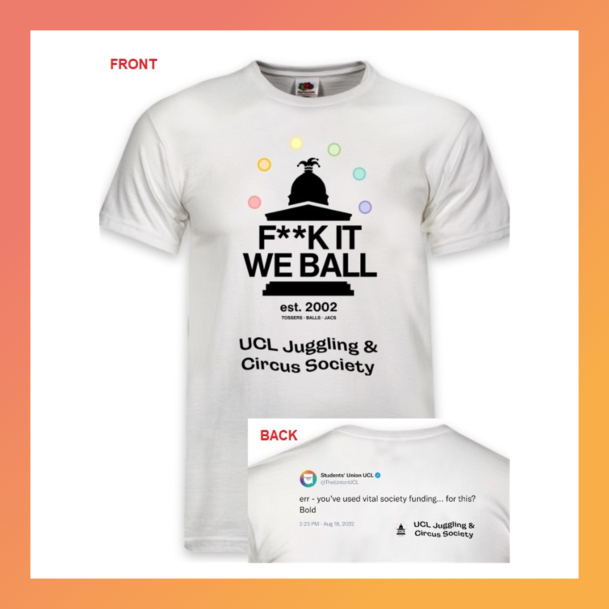
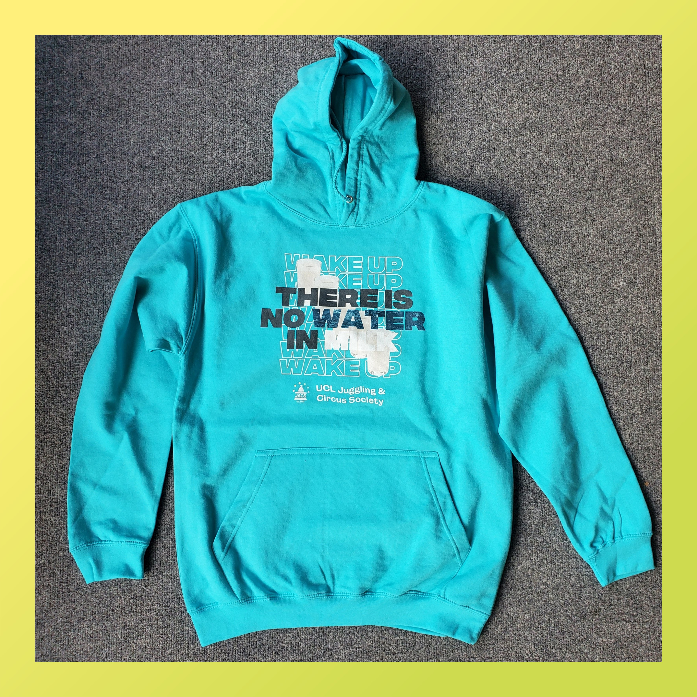
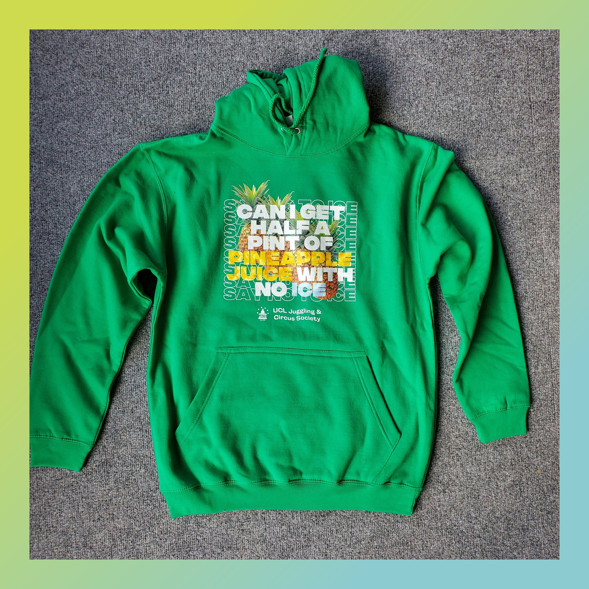
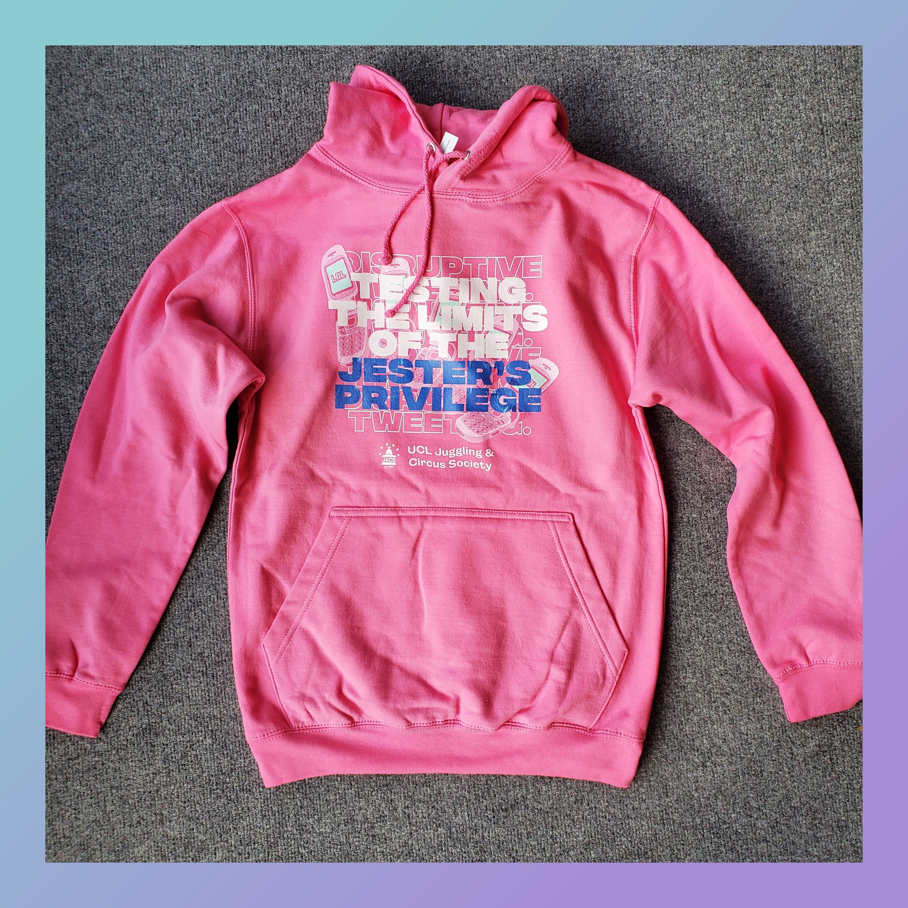

This is the flagship JACS merch. With sizes avaliable in small, medium, and large, this bad boy sends a clear message to the world that you wield 'fuck it we ball' energy.
Unfortunately, due to Union censorship rules we've had to censor the f-word. But it'll do the job.
Just to drive the point home, on the back is a tweet that the Union probably regrets writing, saying 'er - you've used vital society funding for this? Bold'
Damn right we are bold and screw you too for not giving us any funding for this because we went ahead and got our own sponsors.
Merch
!! TERM 1 CLEARANCE SALE !!
After 18 years of 'thinking about having merch', we are finally making merch. These are all original designs made by clowns, for clowns.
Stocks are limited so get yours now before they sell out!
Message from our sponsors
Many thanks to our partners at Clothes2order.com for sponsoring this purchase. With fast processing and delivery times, high quality vibrant print and embroidery finish with crisp lines where the finished logo actually matches the original file submitted, a user-friendly website and a friendly call centre team and artworkers to help out, C2O is an excellent company with 25 years of experience in the industry and over 23,000 reviews on Trustpilot rated excellent. If you're also looking to print merch for your club or society, you can now get 10% off on your next order with Clothes2order using our promo code UCLJS10!
Collection and Delivery
All items are collection only unless otherwise arranged. You can collect your item with an email proof of purchase at our weekly Tuesday sessions during term time. More information
about where to find us here. If you are unable to do that for whatever reason we may be able to post them to your
address, but we may have to bill you for extra charges depending on postage. See Royal Mail's pricing chart
here.
For delivery arrangements and other queries, please contact us via email at su-jugglingandcircus.society@ucl.ac.uk
citing your order number and we will get back to you as soon as possible.
T-shirts

Hoodies

Did you know that there is no water in milk? Milk is its own liquid, the secret 119th element on the periodic table, but the government doesn't want you to know
about it. Why the hell do you think the US government currently holds a stockpile of
1.4 billion pounds of cheese in massive underground caves? They are gatekeeping this shit from us.
Now that you know about the big milk conspiracy, it's time to wake the masses up. The people deserve the truth, and what better way to spread it than with a vibrant
turquoise blue hoodie? Sizes available in medium and large.

The best way to finish a JACS Tuesday session is with a nice cold glass of pineapple juice. But the filthy capitalists at the Union always tries to slide in massive cubes of ice.
The juice literally just came out of the fridge, so it is already chilled. The only reason they are giving you ice is so that they could give you less juice to help their margins.
It's time to say no to ice. Liz Truss can trash the economy all she wants, but I draw the line at my half-pint of pineapple juice with no ice. Get yours today so you
can turn up to the bar and be served without saying a word. Sizes available in medium only.

The Jester's Privilege is the right of clowns to speak and mock freely without being punished. As jesters of the modern day, we have assumed the mantle of this god-given
right to Twitter dot com to test just how far we can invoke this ancient recourse.
But the woke left establishment wants to take this away from you. They are calling our tweets 'unprofessional' and a risk of 'reputational damage'. They seem to have forgotten that
UCL prides itself on being disruptive thinkers, and we are simply disruptive tweeters. Get yours now to remind the wokerati that shitposting is a god-given right. Sizes available in small and medium.